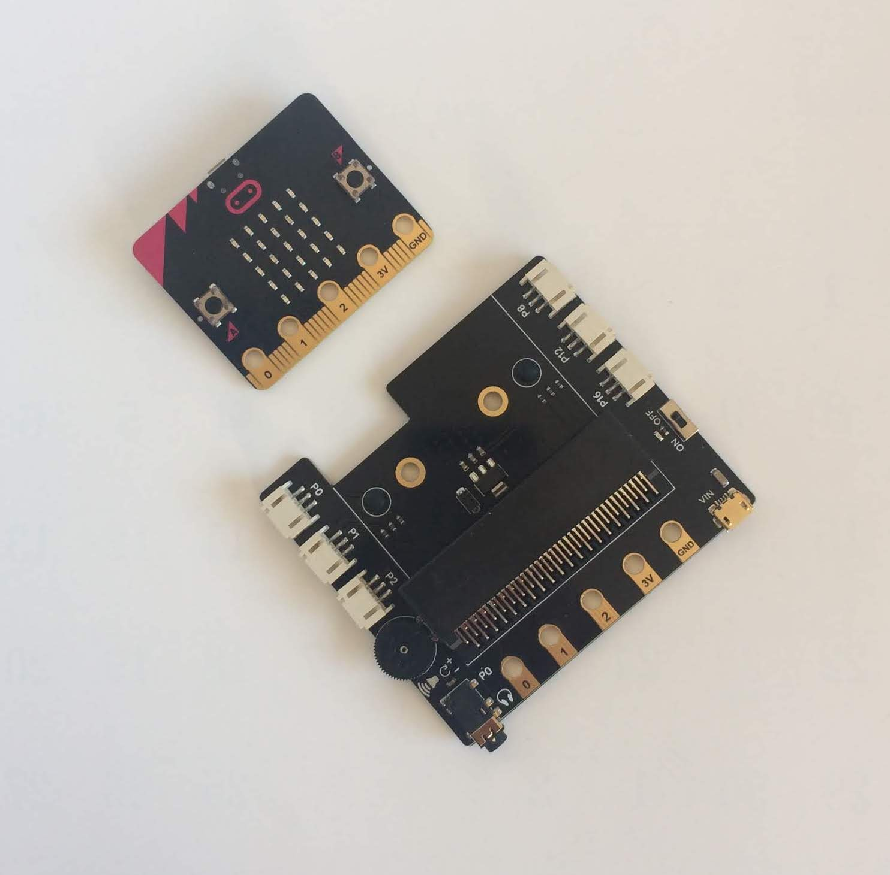

「AmbientでIoTをはじめよう」、第15回は「Gravity」シリーズのセンサを扱います。
「Gravity」は上海にあるDFRobot社が提供するセンサ・シリーズです。 DFRobot社は2008年に設立された会社で、オープンソースのハードウェア、 特にロボットプラットフォームやセンサ、Arduino互換シールドなどを製造しています。
「Gravity」シリーズは温度センサ、湿度センサ、光センサといったポピュラーなものから pHセンサ、水分導電率センサ、溶存酸素量センサといった少し珍しいセンサまで豊富なラインナップが提供されています。
原稿執筆時点(2018年12月)でスイッチサイエンスのサイトでも200種類のセンサ類が扱われています (お取り寄せ商品を含みます)。ページを見ているだけでもワクワクします。
「Gravity」シリーズのセンサには次のような特徴があります。
Arduinoやmicro:bitにセンサを接続する拡張ボードもあり、簡単にセンサ端末が作れます。
今回はこの中からLM35搭載アナログ温度センサと 赤外線CO2センサを使い、M5Stackにつないで温度とCO2濃度を測ります。 溶存酸素量センサなどの特徴的なセンサを評価したかったのですが、評価する対象が身近にないので、今回は評価していません。
写真2の上が赤外線CO2センサ、右下がLM35搭載アナログ温度センサ、左下はアナログ環境光センサです。 3ピンのソケットの横に「A」と書かれてあり、これらのセンサがアナログセンサであることが分かります。 「A」の反対側にセンサの機能を示すピクトグラムがあります。
テキサス・インスツルメンツ製のアナログ温度センサLM35を搭載したセンサモジュールです。
仕様やサンプルプログラムは「DFRobot LM35 Linear Temperature Sensor」にあります。
LM35搭載アナログ温度センサの主な仕様を示します。
| タイプ | アナログ |
| 動作電圧 | 3.3-5.0 V |
| 感度 | 10 mV/℃ |
| 機能範囲 | 0〜150°C |
| 精度 | ±1℃ |
LM35搭載アナログ温度センサとM5Stackは次のようにつなぎます。
| LM35搭載アナログ温度センサ | M5Stack |
|---|---|
| 電源 | 5V |
| GND | GND |
| 信号線 | 35 |
LM35の電源とGNDをつなぐと、周囲の温度に対応して、信号線に0℃のときは0V、20℃のときは200mVの電圧が出力されます。
LM35をM5Stackの内蔵ADコンバータにつないで、analogRead()でLM35の出力を読むのですが、ここで考慮すべきポイントがあります。
ESP32内蔵のADコンバータはデフォルトで12ビットで、0から3.6Vの入力に対して0から4095が出力されます。 このADコンバータは入力のアナログ値に対して出力が直線ではないという問題があります。 実際に入力電圧をテスタで測りながらADコンバータの出力を調べると、図1のように実際の電圧が0.2Vから2.5Vぐらいの間はほぼ直線ですが、 それ以外のところでは直線から外れてしまいます。
温度センサLM35で室温を測る場合、温度は0〜40℃ぐらい、LM35の出力は0〜0.4Vぐらいなので、直線でない部分を使うことになります。 これはESP32を搭載しているM5Stackでも共通の問題です。
そこで、次のような簡単な補正式をつかい、ADコンバータで読み取った値を修正します。
v = (float)analogRead(PIN) / 4095.0 * 3.6 + 0.1132;
LM35の出力から温度を求めるプログラムは次のようになります。
float voutT = (float)analogRead(35) / 4095.0 * 3.6 + 0.1132;
float temp = voutT / 0.01;
NDIR(Non Dispersive Infrared)方式のCO2センサモジュールです。 NDIR方式とはガス分子が特定の波長の光を吸収することを利用して特定のガスの濃度を測定するセンサです。CO2濃度の測定にはNDIRガスセンサがよく使われます。
仕様やサンプルプログラムは「Gravity: Analog Infrared CO2 Sensor For Arduino」にあります。
赤外線CO2センサの主な仕様を示します。
| 検出ガス | 二酸化炭素 |
| 動作電圧 | 4.5〜5.5 V DC |
| 平均電流 | 60 mA以下（5 V時） |
| ピーク電流 | 150 mA（5 V時） |
| 出力信号 | アナログ出力（0.4〜2 V） |
| 測定範囲 | 0〜5000 ppm |
| 精度 | ±（50 ppm + 3％） |
| 予熱時間 | 3分 |
| 応答時間 | 120秒 |
| 動作温度 | 0〜50℃ |
| 動作湿度 | 0〜95％RH（結露なきこと） |
| 寿命 | 最大5年 |
| サイズ | 37 mm × 69 mm |
| 重量 | 34 g |
赤外線CO2センサとM5Stackは次のようにつなぎます。
| 赤外線CO2センサ | M5Stack |
|---|---|
| 電源 | 5V |
| GND | GND |
| 信号線 | 36 |
赤外線CO2センサのデータシートによると、出力とCO2濃度は次の関係があります。
電源が5Vの時、CO2濃度0〜5000ppmに対して、出力は0.4〜2.0Vになります。0.4V未満は予熱中、0Vはエラーです。
ADコンバータの直線性の補正も加え、赤外線CO2センサの出力からCO2濃度を求めるプログラムは次のようになります。
float voutC = analogRead(36) / 4095.0 * 3.6 + 0.1132;
float co2 = (voutC - 0.4) / 1.6 * 5000.0;
LM35搭載アナログ温度センサと赤外線CO2センサを読んで、M5StackのLCDに表示するプログラムは次のようになります。
温度とCO2濃度データをAmbientに送信するのは、取得したデータをset()してsend()するだけです。
ambient.set(1, temp);
ambient.set(2, co2);
ambient.send();
Wi-Fiのアクセスポイントに接続して、周期的に温度とCO2濃度を測定し、Ambientに送信するプログラムの全体は次のようになります。
「Gravity」シリーズには、センサをmicro:bitに接続する拡張ボード 「Boson/Gravity - micro:bit用拡張基板」があります。 写真3の右下が拡張ボード、左上はmicro:bitです。

拡張ボードの両側にP0、P1、P2、P8、P12、P16と書かれたコネクタがあり、micro:bitの対応するピンにつながっています。 ここに「Gravity」シリーズのセンサを接続します。
P0、P1、P2にLM35搭載アナログ温度センサ、赤外線CO2センサ、アナログ環境光センサをつないだのが写真4です。
これを使って、micro:bitからセンサをアクセスしてみます。
micro:bitはブロックエディタの他にMicroPythonでプログラミングできるので、今回はそれも試してみます。
micro:bitで用意されているPythonエディタは、REPL(対話型インタプリタ)機能がありません。
micro:bit MicroPythonチュートリアルを見ると、 「muエディタ」という開発環境も推奨しているので、それを使ってみます。
「muエディタ」のサイトで、お使いのOS用のプログラムをダウンロードして、インストールします。
muエディタを立ち上げると、図4のように開発対象の環境を聞かれるので、micro:bitを選択します。
micro:bitをUSBケーブルでPCにつなぎ、muエディタの「REPL」ボタンをクリックすると、 画面の下部にREPLの領域が現れ、プロンプト(>>> )が表示されます。 プロンプトが表示されない時は、上の画面で簡単なMicroPythonプログラム(例えばprint('hello'))を書き、 「Flash」ボタンをクリックしてプログラムをmicro:bitに送って実行させ、 その後「REPL」ボタンをクリックするとプロンプトが現れます。
プロンプト(>>> )にMicroPythonの文を入力すると、その場で実行され、結果が表示されます。
REPLはプログラム開発の初期段階でプログラムを少しずつ動作させ、確認しながら 開発を進められるのでとても便利です。例えばピン0に接続したアナログセンサの値は次のように確認できます。
>>> from microbit import * >>> pin0.read_analog() 68
micro:bitのMicroPythonについては「micro:bit MicroPython ドキュメンテーション」に書かれています。 ページ左下の「v: latest」をクリックして「ja」を選択すると日本語のドキュメントが表示されます。
read_analog()はピンの入力0〜3.3Vに対して0〜1023の数値を返します。 次のようにするとピン0につなげたアナログ温度センサの値を読んで温度(℃)に変換できます。
>>> pin0.read_analog() / 1023.0 * 3.3 / 0.01 21.2903
同様に、次のようにするとピン1につなげた赤外線CO2センサの値を読んでCO2濃度を得られます。
>>> pin1.read_analog() 137 >>> (pin1.read_analog() / 1023.0 * 3.3 - 0.4 / 5.0 * 3.3) * 1.6 / 5.0 * 3.3 * 5000.0 1484.53
アナログ環境光センサは周囲の明るさを測ります。 DFRobot社の資料によると、 このセンサの値は参考値で、明るさの単位であるLuxに変換するには校正された照度センサを使って自分で校正するように書かれています。 ここではLuxに変換せず、read_analog()で読んだ値を参考値として使うことにします。
アナログ温度センサ、赤外線CO2センサ、アナログ環境光センサを読んで、温度、CO2濃度、明るさを出力するプログラムは次のようになります。
muエディタにこのプログラムを入力し、「Flash」ボタンでプログラムをmicro:bitに書き込むと、 micro:bitのLEDが点滅し、しばらくするとmuエディタの左下に「Flashing "untitled *" onto the micro:bit」と 表示され、書き込みが終わります。
書き込みが終わったらパソコンでCoolTermのようなターミナルコマンドでmicro:bitに接続するとprint()した結果が確認できます。 「REPL」ボタンをクリックすると、実行中のプログラムが中断されてしまいます。 print()した結果を見るには「REPL」ではなく、別のターミナルコマンドを立ち上げてください。
micro:bitのMicroPythonでは、残念ながらBluetoothがサポートされていません。 センサで得られた値をBLEで送信するには、micro:bitのブロックエディタを使います。 やり方は「micro:bitで温度データをAmbientに送りグラフにする(コネクトモード編)」を参考にしてください。
この記事はアンビエントデーターの下島が担当しました。